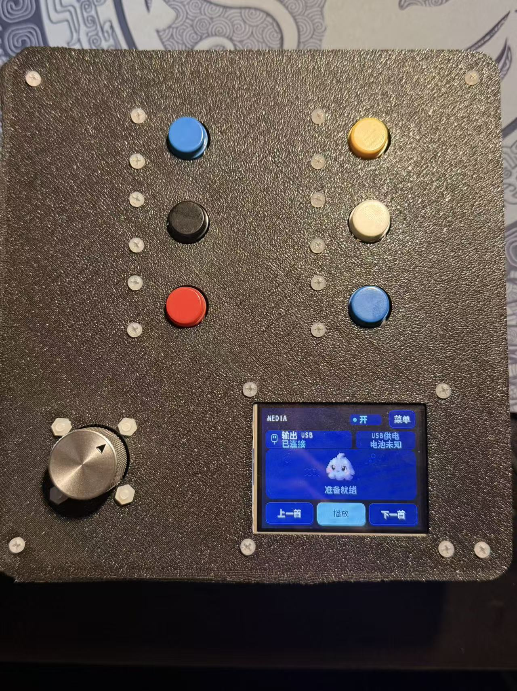
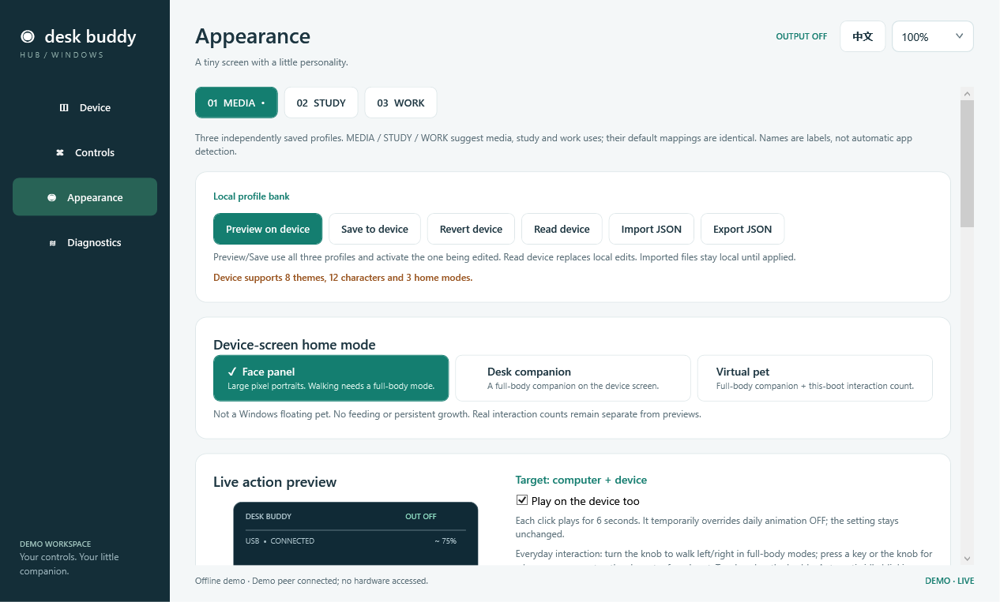
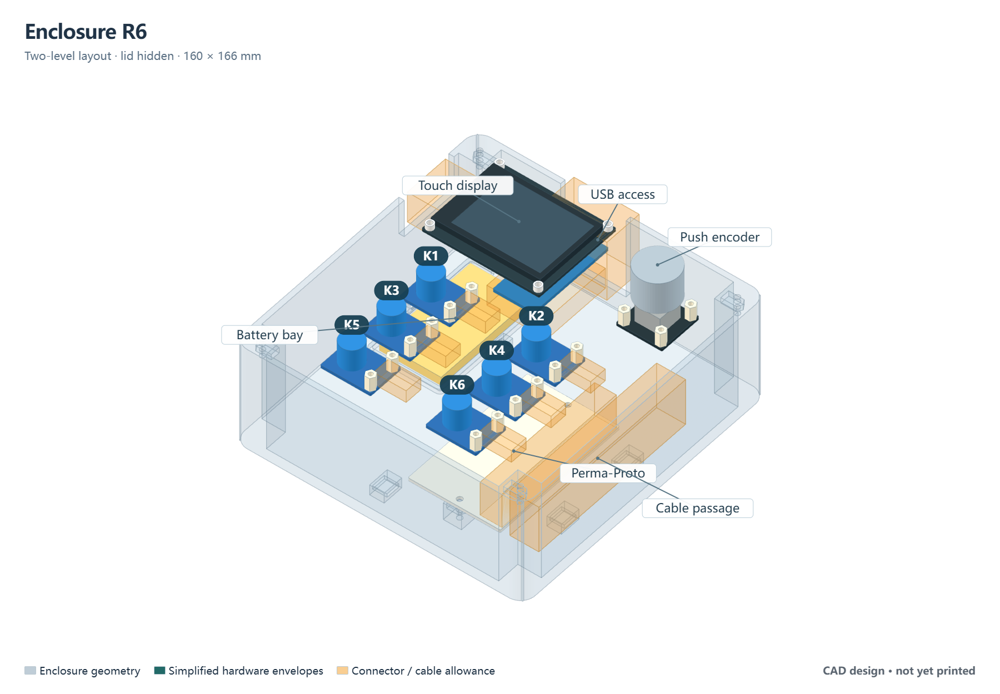
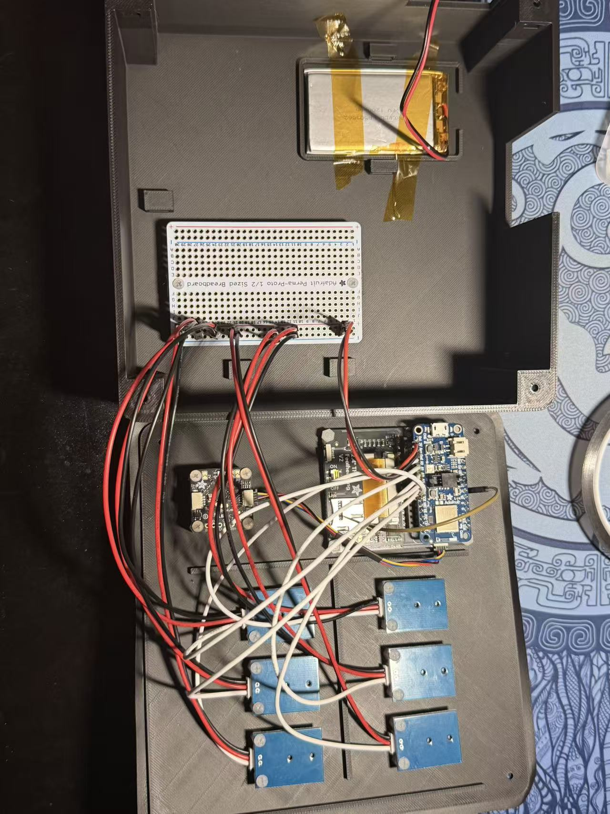
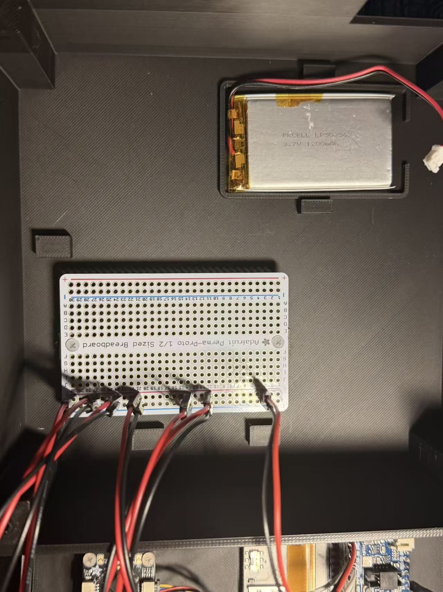

Assign what matters.
Choose keyboard shortcuts and media actions for all twelve inputs. Keep three independent profiles for different workflows.
HARDWARE / FIRMWARE / DESKTOP SOFTWARE
A programmable desktop controller with six buttons, a push encoder, and a character display. Configure shortcuts, media controls, and appearance from a Windows companion app.
Enclosed prototype · Assembled October 2026

THE SYSTEM
I brought commercial boards, embedded firmware, desktop software, and enclosure design together as one system. Desk Buddy maps buttons, rotation, and touch to keyboard or media actions, with local feedback on a 320 × 240 display.
The nRF52840 runs Arduino C++ firmware. The C#/WPF Hub handles configuration over USB CDC or authorized, encrypted BLE GATT. Its management connection is independent of the selected USB or Bluetooth HID output route.
DESK BUDDY HUB
One place for mappings, device status, display themes, and saved profiles.

Choose keyboard shortcuts and media actions for all twelve inputs. Keep three independent profiles for different workflows.
Eight themes and twelve characters support portrait, companion, and virtual-pet views. Actions respond to keys, rotation, and touch.
Preview changes, save them to the device, or return to saved settings. Offline snapshots and unsent drafts have distinct labels.
ENGINEERING DECISIONS
Three problems that changed how I structured the system.
Opening a menu or previewing an appearance could turn output off. I traced this to firmware that mixed the user’s ON/OFF choice with the current page’s permission to transmit.
I separated those states. Ordinary navigation and appearance edits now preserve the choice; diagnostics and sleep suppress transmission independently. Mapping changes release old reports and clear queued actions.
Language saves still delayed touch sampling after layout and drawing improvements. I traced the remaining delay to an equal-priority storage worker monopolizing execution when time slicing was disabled.
I raised the UI task’s priority, kept deliberate yielding, and split drawing into smaller chunks that permit touch sampling.
A disconnected Hub reopened with defaults, while reconnecting restored the device’s settings. The symptom came from desktop startup, not a device save failure.
I added separate last-read snapshots and unsent drafts, with validated file replacement and backup recovery. Fresh device readback remains authoritative; cached values are never sent automatically.
SYSTEM ARCHITECTURE
Read and accept an interaction
Apply the active profile
Enable + readiness + sleep
Send through one selected route
The Hub’s configuration channel runs alongside this path. Saved preferences, editing drafts, and live connection state remain separate.
MECHANICAL INTEGRATION
A removable upper assembly, a lower service area, and room to disconnect components.

I revised the early board stack so the Perma-Proto distribution board connects by wiring instead of sitting between the display and controller. That gives the distribution board a separate mounting position while retaining the native Feather/TFT stack.
I printed the R6 enclosure and mounted the display, controller, encoder and six buttons to its removable lid. The battery and Perma-Proto occupy the lower compartment, with a side route for the existing wire harness.
The first enclosure is now assembled. Its nominal CAD envelope is 160 × 166 × 62.4 mm; the photographs document the build, not a dimensional inspection. The original CAD is retained here for comparison.


WHAT THE FIRST FIT REVEALED
The Feather’s actual position relative to the TFT was opposite my model’s assumption. The original service opening did not expose the USB connector.
I rotated the TFT assembly 180 degrees and kept a USB cable connected inside the enclosure, routing it through the opening beside the battery. For everyday use, I now connect and disconnect at the computer end.
For the next mechanical revision, I will correct the board orientation and check the plug body, cable bend and insertion path together. A deliberate cable exit and verified strain relief are still needed for a durable retained-cable design.
VALIDATION & NEXT STEPS
R3H passed 42 production USB-client configuration checks, a separate BLE management run, saved-setting readback after software reboot, and a real 30-second automatic display-sleep check.
Backlight-off and first-touch wake were physically observed on the preceding R3G build under USB power.
Hub 1.7.1 passed 6,146 assertions across 42 host test groups and 788 offline WPF checks. These runs use controlled transports; they are separate from physical-device checks.
With the enclosure assembled, the next checks are closed-lid operation, cable strain relief, USB/BLE reconnects and battery-only key/encoder wake. Assembly photographs do not replace those checks. Battery endurance remains unmeasured.
Hardware, firmware, and desktop software—documented as one evolving system.
Download the case study